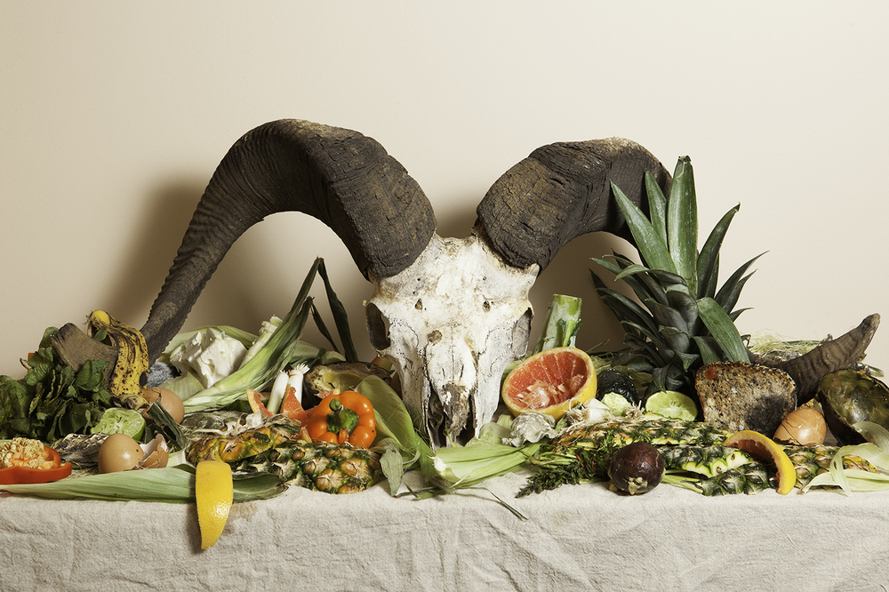
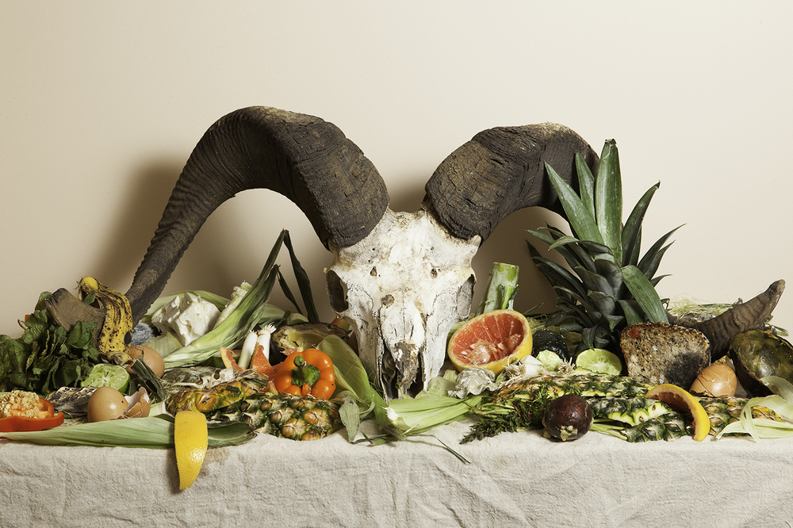

New York-based photographer, Aliza Eliazarov, has always had a slight fascination with food and farming. Having worked with farmers and food professionals the world over to create compelling imagery for clients, her latest project takes this interest a step further. Titled Waste Not, it’s a series of striking images of food that she retrieved from dumpsters and other waste sources around the city. The issue of food waste is massive in the United States, especially within the restaurant industry. Almost 84 per cent of their untouched food ends up in the trash, much of it still perfectly suitable for consumption. According to Eliazarov, who pawed through New York's discarded food waste for her materials, every night the city streets are lined with trash bags stuffed to the brim with tossed out bagels and bread. Her idea for Waste Not was born from a 2011 photography assignment she received to follow a ‘freegan’ – the term for someone who has rejected consumerism in favour of eating only discarded foods - on his daily quest for groceries. Watching him rummage through the garbage before laying his plunder on the ground for inspection, Eliazarov was immediately struck by how palatable it all still appeared. “What I observed was interesting and insightful,” she told Highlands Current. “It confirmed the confusion that people had about food waste." Inspired by still life paintings from the 1600’s, the food in Waste Not is set up to look like an indulgent meal. "I began to study paintings of food and feasting in art, especially those from the 17th-century masters," Eliazarov said. "The way [the] food in these paintings were elevated to objects of art really spoke to me and made sense for this series and subject matter — to take food headed for the trash and make it art." The look of the images also evolved from Eliazarov’s desire to depict the opportunities for food salvage rather than showing it as waste. Rather than make the focus the spoiled food, she sought to place the emphasis on redirecting it from the waste stream while it was still edible. She sought to counter the notion that food should be tossed out just because it looks a bit "off". Highlighting some of the more uncomfortable statistics about global food consumption, Waste Not is a direct challenge of the perspective that this food waste is dirty or unhygienic. It urges us to reconsider what we consider spoiled food. In her quest to authentically illuminate these pressing issues, Eliazarov is willing put her money where her mouth is; once the photo shoot was complete, she and her team promptly ate their subjects.